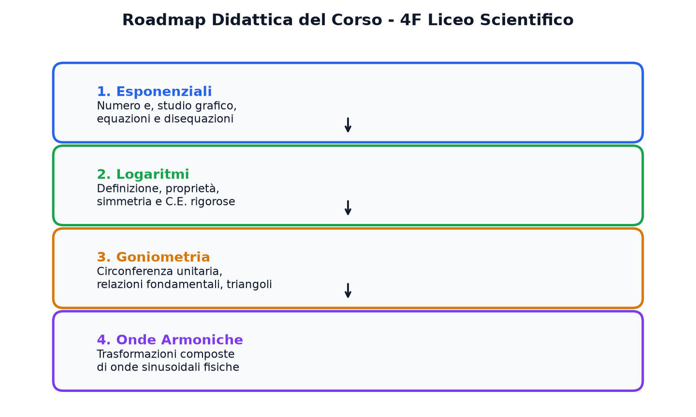
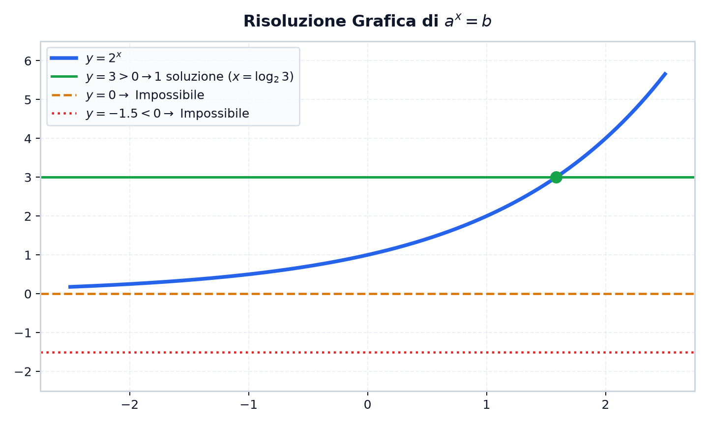

Quaderno del Prof – Matematica 4B
Compendio Multimediale Interattivo di Esponenziali, Logaritmi e Goniometria
📘 Quadro Didattico del Corso – Matematica 4B Modulo Integrato
Cari ragazzi, questa lezione multimediale raccoglie e sistematizza in modo rigoroso l'intero percorso svolto in classe su funzioni esponenziali, genesi di Nepero e capitalizzazione di Bernoulli, equazioni e disequazioni esponenziali, teoria e teoremi dei logaritmi, risoluzione grafica di equazioni trascendenti e fondamenti di goniometria e trigonometria (circonferenza unitaria, relazioni fondamentali, sinusoidi, equazioni parametriche, cotangente, coefficiente angolare della retta e formule degli angoli associati).
Negli appunti del quaderno sono spesso tracciati solo i passaggi algebrici sintetici e i grafici finali. Qui invece analizziamo la deduzione formale completa, il significato geometrico profondo, le animazioni vettoriali e la confutazione degli errori più insidiosi rilevati nelle vostre verifiche.
- Area 1: La Funzione Esponenziale e la Costante di Nepero: Dal problema economico di Jacob Bernoulli alla dimostrazione analitica della limitatezza \(a_n < 3\) con il binomio di Newton e biforcazione di monotonia per \(a > 1\) e \(0 < a < 1\).
- Area 2: Equazioni e Disequazioni Esponenziali: Metodi algebrici analitici (stessa base, raccoglimento, incognita ausiliaria) e risoluzione grafica cartesiana di equazioni trascendenti miste.
- Area 3: Teoria dei Logaritmi e Funzione Inversa: Definizione assiomatica, dimostrazioni formali dei teoremi fondamentali (prodotto, quoziente, potenza, cambio di base) e simmetria speculare rispetto alla bisettrice \(y = x\).
- Area 4: Equazioni e Disequazioni Logaritmiche: Ruolo preliminare tassativo delle Condizioni di Esistenza (C.E.), disequazioni fratte con basi reciproche e discussione parametrica con valore assoluto (Esercizio Svolto 4.2).
- Area 5: Introduzione alla Goniometria e Trigonometria: Circonferenza unitaria, prima e seconda relazione fondamentale, valori notevoli, parità e grafici di seno/coseno, equazioni goniometriche parametriche, cotangente, significato geometrico di \(m = \tan\alpha\) e formule di riduzione degli angoli associati.

📈 La Genesi del Numero \(e\): La Costante di Nepero e la Scoperta di Bernoulli Modulo 1
Il numero di Nepero \(e\) emerge studiando l'espressione ad esponente reale \(\left(1 + \frac{1}{n}\right)^n\) quando l'indice di frazionamento temporale \(n\) cresce indefinitamente verso valori sempre più grandi:
\[ \left(1 + \frac{1}{n}\right)^n \xrightarrow[\text{per } n \text{ grandissimo}]{} e \approx 2{,}718281828459\dots \]All'aumentare di \(n\) (capitalizzazione istante per istante), i valori non esplodono all'infinito ma si stabilizzano asintoticamente attorno a questo valore invalicabile. Si tratta di una costante universale fondamentale della matematica e della fisica, numero irrazionale (dimostrato da Eulero nel 1737) e trascendente (dimostrato da Hermite nel 1873).
Consideriamo un capitale iniziale \(C = 1000\) € depositato ad un tasso nominale annuo del \(100\%\) (\(r = 1\)). Se gli interessi vengono accreditati e ricapitalizzati in \(n\) intervalli uguali durante l'anno, il montante finale a 12 mesi è:
\[ M_n = C \left(1 + \frac{1}{n}\right)^n \]- \(n = 1\) (Capitalizzazione Annuale): \(M_1 = 1000 \cdot (1 + 1)^1 = 2000\) €. Guadagno netto: \(1000\) €.
- \(n = 2\) (Capitalizzazione Semestrale): \(M_2 = 1000 \cdot (1 + 0{,}5)^2 = 1000 \cdot 2{,}25 = 2250\) €.
Osservazione fondamentale: Guadagniamo \(250\) € in più perché al secondo semestre maturano interessi anche sui \(500\) € di interessi maturati a metà anno! È il principio dell'interesse sull'interesse. - \(n = 4\) (Trimestrale): \(M_4 = 1000 \cdot (1 + 0{,}25)^4 \approx 2441{,}41\) €.
- \(n = 12\) (Mensile): \(M_{12} = 1000 \cdot (1 + 1/12)^{12} \approx 2613{,}04\) €.
- \(n = 365\) (Giornaliero): \(M_{365} = 1000 \cdot (1 + 1/365)^{365} \approx 2714{,}57\) €.
NO! Molti studenti ritengono erroneamente che capitalizzando istante per istante (con frequenza \(n\) arbitrariamente grande) la ricchezza esploda. In realtà, mentre il numero di periodi \(n\) aumenta a dismisura, la frazione di interesse \(1/n\) maturata in ciascun intervallo diventa infinitesima. La funzione è soggetta alla legge dei rendimenti marginali decrescenti: la crescita rallenta e sbatte contro il tetto asintotico invalicabile di \(1000 \cdot e \approx 2718{,}28\) €!
La Metafora Didattica delle Banche: Immaginiamo tre banche in fila. La prima offre il 100% all'anno (\(n=1\)), la seconda il 50% ogni 6 mesi (\(n=2\)), la terza il 25% ogni 3 mesi (\(n=4\)). A ogni frazionamento, gli interessi maturati iniziano a produrre a loro volta nuovi interessi prima del termine dell'anno! Questo porta alla domanda: «Se una banca capitalizzasse ogni secondo o istante per istante (\(n \to +\infty\)), diventeremmo infinitamente ricchi?»


📈 Proprietà e Monotonia della Funzione Esponenziale Modulo 1
Data una base reale costante \(a > 0\) con \(a \neq 1\), si definisce funzione esponenziale elementare la funzione:
\[ f: \mathbb{R} \to (0, +\infty), \quad y = a^x \]- Dominio Naturale: \(\mathcal{D} = \mathbb{R} = (-\infty, +\infty)\). L'esponente può assumere qualunque valore reale.
- Codominio (Insieme Immagine): \(\mathcal{I} = \mathbb{R}^+ = (0, +\infty)\). La funzione è strettamente positiva: \(a^x > 0 \quad \forall x \in \mathbb{R}\). Non tocca mai l'asse \(x\)!
- Punto Fisso Fondamentale: Il grafico passa sempre per \(P(0, 1)\) poiché \(a^0 = 1\) per ogni base \(a > 0\).
- Iniettività Globale: \(a^{x_1} = a^{x_2} \iff x_1 = x_2\). Consente di uguagliare direttamente gli esponenti nelle equazioni.
| Parametro Base | Monotonia | Comportamento per \(x\) negativi grandi | Comportamento per \(x\) positivi grandi | Asintoto Orizzontale |
|---|---|---|---|---|
| \(a > 1\) | Strettamente Crescente | Si schiaccia su \(y = 0\) (\(a^x \to 0\) senza toccarlo) | Crescita esplosiva verso l'alto (\(a^x \to +\infty\)) | \(y = 0\) (Asintoto orizzontale a sinistra) |
| \(0 < a < 1\) | Strettamente Decrescente | Cresce verso l'alto a sinistra (\(a^x \to +\infty\)) | Si schiaccia su \(y = 0\) (\(a^x \to 0\) a destra) | \(y = 0\) (Asintoto orizzontale a destra) |
La variazione della base \(a\) determina due comportamenti asimmetrici radicali nel mondo reale: la duplicazione biologica senza freni (\(a > 1\)) e l'estinzione asintotica per dimezzamento (\(0 < a < 1\)).

✏️ Tipologie di Equazioni Esponenziali e Metodi Risolutivi Modulo 1
- Se \(b \le 0\): Impossibile nel campo reale, poiché \(a^{f(x)} > 0 \quad \forall x\). Ad esempio, \(3^x = -4 \implies \emptyset\).
- Se \(b > 0\): Esiste un'unica soluzione reale data da \(f(x) = \log_a b\).
Risolvere l'equazione notevole del compito:
\[ 2^{2x} - 5 \cdot 2^x + 4 = 0 \]- Scomposizione potenze: \(2^{2x} = (2^x)^2\). Poniamo \(t = 2^x\), con vincolo tassativo \(t > 0\).
- Risoluzione ausiliaria: \(t^2 - 5t + 4 = 0 \implies (t - 1)(t - 4) = 0 \implies t_1 = 1, \ t_2 = 4\). Entrambe accettabili poiché positive.
- Ritorno alla variabile originaria \(x\):
- \(2^x = 1 \implies 2^x = 2^0 \implies x_1 = 0\)
- \(2^x = 4 \implies 2^x = 2^2 \implies x_2 = 2\)
Se la risoluzione in \(t\) fornisce una radice negativa (ad esempio \(t = -3\)), non dovete MAI scrivere \(x = \dots\)!
L'uguaglianza \(2^x = -3\) non ammette soluzioni. La radice negativa va dichiarata immediatamente inaccettabile.

📊 Risoluzione Grafica di Equazioni Trascendenti Miste Modulo 1
Quando l'incognita compare sia ad esponente che in un polinomio algebrico, l'equazione è detta trascendente mista e non può essere risolta isolando algebricamente la \(x\).
Si decompone l'equazione nell'intersezione di due curve note nel piano cartesiano:
\[ \begin{cases} y = 2^x & \text{(Esponenziale strettamente crescente)} \\ y = 1 - x^2 & \text{(Parabola concava con vertice in } V(0, 1)\text{)} \end{cases} \]- Prima radice esatta (\(x_1 = 0\)): Verificata per ispezione diretta: \(2^0 = 1 = 1 - 0^2\). Il punto \(P_1(0, 1)\) è comune ad entrambe le curve.
- Seconda radice approssimata (\(x_2 \approx -0{,}715\)): Nel secondo quadrante (\(x < 0\)), l'esponenziale scende verso l'asintoto mentre la parabola sale verso il vertice. Si intersecano nel punto \(P_2(-0{,}715;\, 0{,}489)\).
- Teorema di Unicità per Stretta Convessità: La funzione differenza \(g(x) = 2^x + x^2 - 1\) ha derivata seconda \(g''(x) = 2^x(\ln 2)^2 + 2 > 0 \quad \forall x\). Essendo strettamente convessa su tutto \(\mathbb{R}\), non può ammettere più di 2 zeri reali!
⚖️ Disequazioni Esponenziali e Regola Aurea del Verso Modulo 1
Nel passaggio dal confronto tra potenze \(a^{f(x)} > a^{g(x)}\) al confronto tra gli esponenti:
| Base \(a\) | Monotonia Funzione | Azione sul Verso della Disuguaglianza | Equivalenza Logica |
|---|---|---|---|
| \(a > 1\) | Strettamente Crescente | IL VERSO SI CONSERVA | \(a^{f(x)} > a^{g(x)} \iff f(x) > g(x)\) |
| \(0 < a < 1\) | Strettamente Decrescente | IL VERSO SI INVERTE TASSATIVAMENTE | \(a^{f(x)} > a^{g(x)} \iff f(x) < g(x)\) |
Risolvere la disequazione: \(\left(\frac{1}{2}\right)^{x^2 - 3} \ge \left(\frac{1}{2}\right)^{2x}\)
- La base è \(a = 1/2\). Poiché \(0 < 1/2 < 1\), invertiamo il verso: \[ x^2 - 3 \le 2x \iff x^2 - 2x - 3 \le 0 \]
- Fattorizzazione trinomio: \((x - 3)(x + 1) \le 0\).
- Soluzione corretta: valori interni \(-1 \le x \le 3\), ovvero l'intervallo \([-1, 3]\).
Se lo studente dimentica di invertire il verso e scrive \(x^2 - 3 \ge 2x\), trova erroneamente i valori esterni \(x \le -1 \lor x \ge 3\). Questo intervallo è il complementare opposto di quello corretto: per \(x = 0\) (che cadrebbe nella soluzione errata come esclusa) avremmo \((1/2)^{-3} = 8\) e \((1/2)^0 = 1\), ed essendo \(8 \ge 1\) la disequazione è palesemente verificata!
📐 Teoria dei Logaritmi e Teoremi con Dimostrazione Modulo 2
Dati due numeri reali \(a > 0, a \neq 1\) (base) e \(b > 0\) (argomento), si definisce logaritmo in base \(a\) di \(b\) l'esponente \(x\) a cui elevare la base per ottenere l'argomento:
\[ x = \log_a b \iff a^x = b \]Da cui l'identità fondamentale: \(a^{\log_a b} = b \quad \forall b > 0\).
- Teorema del Prodotto: \(\log_a(x \cdot y) = \log_a x + \log_a y \quad (\forall x, y > 0)\)
Dimostrazione: Poniamo \(\alpha = \log_a x\) e \(\beta = \log_a y\). Per definizione: \(x = a^\alpha\) e \(y = a^\beta\). Moltiplicando membro a membro: \(x \cdot y = a^\alpha \cdot a^\beta = a^{\alpha + \beta}\). Riapplicando la definizione di logaritmo: \(\log_a(x \cdot y) = \alpha + \beta = \log_a x + \log_a y \quad \blacksquare\). - Teorema del Quoziente: \(\log_a\left(\frac{x}{y}\right) = \log_a x - \log_a y \quad (\forall x, y > 0)\)
Dimostrazione: Dividendo membro a membro: \(\frac{x}{y} = \frac{a^\alpha}{a^\beta} = a^{\alpha - \beta} \implies \log_a(x/y) = \alpha - \beta = \log_a x - \log_a y \quad \blacksquare\). - Teorema della Potenza: \(\log_a(x^k) = k \cdot \log_a x \quad (\forall x > 0, k \in \mathbb{R})\)
Dimostrazione: Elevando ambo i membri di \(x = a^\alpha\) alla potenza \(k\): \(x^k = (a^\alpha)^k = a^{k\alpha} \implies \log_a(x^k) = k\alpha = k \log_a x \quad \blacksquare\). - Formula del Cambio di Base: \(\log_a b = \frac{\log_c b}{\log_c a} = \frac{1}{\log_b a} \quad (\forall a, b, c > 0; a, c \neq 1)\)
Dimostrazione: Poniamo \(x = \log_a b \implies a^x = b\). Applichiamo ad ambo i membri il logaritmo in una nuova base \(c\): \(\log_c(a^x) = \log_c b \implies x \log_c a = \log_c b \implies x = \frac{\log_c b}{\log_c a} \quad \blacksquare\).
🪞 Funzione Logaritmica e Simmetria Speculare con l'Esponenziale Modulo 2
Essendo strettamente monotona e biiettiva da \(\mathbb{R}\) su \((0, +\infty)\), la funzione esponenziale è invertibile:
\[ f^{-1}: (0, +\infty) \to \mathbb{R}, \quad y = \log_a x \]- Dominio: \(\mathcal{D} = (0, +\infty)\) ← Coincide con il codominio dell'esponenziale!
- Codominio: \(\mathcal{I} = \mathbb{R}\) ← Coincide con il dominio dell'esponenziale!
- Asintoto Verticale: La retta \(x = 0\) (asse \(y\)). Infatti per \(a > 1\), man mano che \(x\) si avvicina a \(0\) da destra (\(x \to 0^+\)), la curva scende indefinitamente verso il basso lungo l'asse \(y\) senza mai toccarlo.
- Intersezione Asse \(x\): Passa per \(P(1, 0)\) poiché \(\log_a 1 = 0\).
I grafici di \(y = a^x\) e \(y = \log_a x\) sono geometricamente simmetrici rispetto alla retta \(y = x\):
\[ P(x_0, y_0) \in \text{Grafico}(a^x) \iff P'(y_0, x_0) \in \text{Grafico}(\log_a x) \]Esempi di coppie riflesse: \((0, 1) \leftrightarrow (1, 0)\), \((1, 2) \leftrightarrow (2, 1)\), \((2, 4) \leftrightarrow (4, 2)\).
Condizioni di Esistenza Tassative ed Esercizio Svolto 4.2 Modulo 2
Le Condizioni di Esistenza (C.E.) vanno determinate SEMPRE SUL TESTO ORIGINALE, prima di manipolare l'espressione con i teoremi dei logaritmi.
Infatti: \(\log_a [f(x) \cdot g(x)]\) richiede solo che il prodotto sia positivo (\(f(x) \cdot g(x) > 0\)), ammettendo anche il caso in cui entrambi siano negativi (\((-)\cdot(-) = +\)). Ma la somma originaria \(\log_a f(x) + \log_a g(x)\) impone che siano entrambi strettamente positivi!
Disequazione assegnata: \(\log_2(x - 1) + \log_2(x - 3) \le 3\)
Si impone la positività rigorosa degli argomenti sul testo originario: \[\begin{cases} x - 1 > 0 \implies x > 1 \\ x - 3 > 0 \implies x > 3 \end{cases} \implies \mathbf{C.E.:\; x > 3}\]
Nel dominio \(x > 3\), accorpando i logaritmi ed esponenziando in base \(2 > 1\): \[ \log_2[(x - 1)(x - 3)] \le 3 \iff (x - 1)(x - 3) \le 2^3 = 8 \] \[ x^2 - 4x + 3 \le 8 \iff x^2 - 4x - 5 \le 0 \iff (x - 5)(x + 1) \le 0 \implies -1 \le x \le 5 \]
\[ \mathcal{S} = [-1, 5] \cap (3, +\infty) = \mathbf{(3, 5]} \]
Data la funzione \(f(x) = 2\log_2(a + |x - 1|) - 4\), con \(a \in \mathbb{R}\):
- Dominio \(\mathbb{R}\): \(a + |x - 1| > 0 \iff a > 0\);
- Condizione \(f(2) = 0\): \(2\log_2(a + 1) = 4 \implies a + 1 = 4 \implies \mathbf{a = 3}\);
- Retta secante per \(x = 2\) e \(x = 6\): passa per \(P_1(2, 0)\) e \(P_2(6, 2)\) con pendenza \(m = 1/2 \implies \mathbf{g(x) = \frac{1}{2}x - 1}\);
- Risoluzione grafica di \(f(x) \ge g(x)\): la curva sovrasta la retta per \(x \in [2, 6]\) e per \(x \le \alpha \approx 0{,}74\).
🔄 Inversione Analitica e Composizione con Valore Assoluto Modulo 3
Dalla biunivocità della funzione logaritmica reale, data la funzione traslata \(f(x) = 2\log_2(x + 1) - 1\) con dominio \(D = (-1, +\infty)\), la sua funzione inversa si ricava per via algebrica scambiando il ruolo delle variabili:
I grafici di \(f(x)\) e \(f^{-1}(x)\) risultano perfettamente simmetrici rispetto alla retta bisettrice \(y = x\).
Siano \(f(x) = |x - 2|\) e \(g(x) = \log_2 x\). L'ordine di composizione determina andamenti geometrici differenti:
- Modulo esterno \(h(x) = f(g(x)) = |\log_2 x - 2|\): la curva logaritmica viene traslata verticalmente di 2 verso il basso (\(y = \log_2 x - 2\), zero in \(x = 4\)); le quote negative per \(0 < x < 4\) vengono ribaltate specularmente verso l'alto con un punto angoloso in \((4, 0)\).
- Modulo interno \(t(x) = g(f(x)) = \log_2 |x - 2|\): definita per \(|x - 2| > 0 \iff x \neq 2\). Presenta un asintoto verticale bilaterale in \(x = 2\) con simmetria assiale perfetta rispetto alla retta \(x = 2\).
🔬 Studio Qualitativo di \(f(x) = 2\log_2(x-1)+1\) ed Equazioni Avanzate Modulo 3
- Dominio: \(x - 1 > 0 \iff D = (1, +\infty)\). Cancellazione dell'intero semipiano non ammesso \(x \le 1\).
- Asintoti: per \(x \to 1^+\), \(f(x) \to -\infty \implies\) Asintoto Verticale destro in \(x = 1\).
- Intersezioni con gli Assi: Asse \(y\) nessuna (\(0 \notin D\)); Asse \(x\): \(2\log_2(x-1)+1=0 \iff \log_2(x-1)=-\frac{1}{2} \iff x-1=2^{-1/2}=\frac{\sqrt{2}}{2} \iff x_0 = 1 + \frac{\sqrt{2}}{2} \approx 1{,}707\). Punto \(A\left(1 + \frac{\sqrt{2}}{2}, 0\right)\).
- Segno della Funzione: \(f(x) > 0\) per \(x > 1 + \frac{\sqrt{2}}{2}\); \(f(x) < 0\) per \(1 < x < 1 + \frac{\sqrt{2}}{2}\).
- Cancellazione Regioni del Piano: per \(1 < x < 1{,}707\) si cancella \(y > 0\); per \(x > 1{,}707\) si cancella \(y < 0\).
Risolvere \(\sqrt{\log_2^2 x + \log_2 x - 2} = \log_2 x - 2\):
Semplificando: \(5\log_2 x = 6 \iff \log_2 x = \frac{6}{5} \iff x = 2^{6/5} \approx 2{,}297\). Poiché \(2{,}297 < 4\), la soluzione è non accettabile: \(\mathcal{S} = \emptyset\).
Risolvere \(|\log_3(x - 2)| = 2\) con condizione tassativa \(C.E.: x - 2 > 0 \iff x > 2\):
Insieme delle soluzioni: \(\mathcal{S} = \left\{\frac{19}{9}, 11\right\}\).
📐 Introduzione alla Goniometria e Circonferenza Unitaria Modulo 4
Si definisce circonferenza goniometrica la circonferenza di raggio unitario avente centro nell'origine del piano cartesiano \(O(0, 0)\):
Dato un angolo orientato \(\alpha\) con vertice in \(O\) e primo lato sull'asse positivo delle ascisse, il secondo lato interseca la circonferenza nel punto associato \(P(x_P, y_P)\):
- Coseno (\(\cos\alpha\)): è l'ascissa del punto \(P\): \(x_P = \cos\alpha\);
- Seno (\(\sin\alpha\)): è l'ordinata del punto \(P\): \(y_P = \sin\alpha\);
- Tangente (\(\tan\alpha\)): è l'ordinata del punto di incontro \(T\) con la retta tangente \(x = 1\): \(y_T = \tan\alpha = \frac{\sin\alpha}{\cos\alpha}\) (\(\alpha \neq \frac{\pi}{2} + k\pi\)).
⚖️ Relazioni Fondamentali e Quadro Sinottico dei Valori Notevoli Modulo 4
1ª Relazione Fondamentale: applicando il Teorema di Pitagora al triangolo rettangolo \(OPH\) inscritto nella circonferenza unitaria:
2ª Relazione Fondamentale: per similitudine tra i triangoli rettangoli \(OPH \sim OTA\):
| Gradi (\(\alpha^\circ\)) | Radianti (\(\alpha\)) | \(\sin\alpha\) | \(\cos\alpha\) | \(\tan\alpha\) |
|---|---|---|---|---|
| \(0^\circ\) | \(0\) | \(\frac{\sqrt{0}}{2} = 0\) | \(\frac{\sqrt{4}}{2} = 1\) | \(0\) |
| \(30^\circ\) | \(\frac{\pi}{6}\) | \(\frac{\sqrt{1}}{2} = \frac{1}{2}\) | \(\frac{\sqrt{3}}{2}\) | \(\frac{\sqrt{3}}{3}\) |
| \(45^\circ\) | \(\frac{\pi}{4}\) | \(\frac{\sqrt{2}}{2}\) | \(\frac{\sqrt{2}}{2}\) | \(1\) |
| \(60^\circ\) | \(\frac{\pi}{3}\) | \(\frac{\sqrt{3}}{2}\) | \(\frac{\sqrt{1}}{2} = \frac{1}{2}\) | \(\sqrt{3}\) |
| \(90^\circ\) | \(\frac{\pi}{2}\) | \(\frac{\sqrt{4}}{2} = 1\) | \(\frac{\sqrt{0}}{2} = 0\) | Non esiste |
📈 Grafici della Sinusoide e Cosinusoide: Parità e Disparità Modulo 4
- Funzione Seno (\(y = \sin x\)): Dominio \(\mathbb{R}\), Codominio \([-1, 1]\), Periodo \(T = 2\pi\), funzione dispari con simmetria centrale rispetto all'origine:
\[\sin(-x) = -\sin x \quad \forall x \in \mathbb{R}\]
- Funzione Coseno (\(y = \cos x\)): Dominio \(\mathbb{R}\), Codominio \([-1, 1]\), Periodo \(T = 2\pi\), funzione pari con simmetria assiale rispetto all'asse delle ordinate:
\[\cos(-x) = \cos x \quad \forall x \in \mathbb{R}\]
Calcolare il valore esatto dell'espressione:
Sostituendo i valori goniometrici notevoli \(\cos 2\pi = 1\), \(\sin\frac{3\pi}{2} = -1\), \(\sin\frac{\pi}{2} = 1\), \(\cos\pi = -1\):
⚖️ Equazioni Goniometriche Parametriche con Discussione Modulo 4
Determinare i valori del parametro reale \(k\) per cui l'equazione \(\cos x = k - 2\) ammette soluzioni reali:
Determinare \(a \in \mathbb{R}\) per cui l'equazione \((2a - 3)\cos x = -a + 4\) ammette soluzioni nel secondo quadrante (\(\frac{\pi}{2} < x < \pi\)):
Intersecando i due sistemi di intervalli si ottiene la soluzione accettabile:
📐 Cotangente, Funzioni Reciproche e Significato Geometrico di \(m = \tan\alpha\) Modulo 4
- Cotangente: \(\cot\alpha = \frac{\cos\alpha}{\sin\alpha} = \frac{1}{\tan\alpha}\) (\(\alpha \neq k\pi\)), funzione dispari e periodica di periodo \(\pi\).
- Secante: \(\sec\alpha = \frac{1}{\cos\alpha}\) (\(\alpha \neq \frac{\pi}{2} + k\pi\)).
- Cosecante: \(\csc\alpha = \frac{1}{\sin\alpha}\) (\(\alpha \neq k\pi\)).
Considerata la retta cartesiana \(y = mx + q\) inclinata dell'angolo \(\alpha\) rispetto all'asse positivo delle ascisse:
Il coefficiente angolare \(m\) coincide esattamente con la tangente goniometrica dell'angolo di inclinazione della retta.
Dati i punti \(A(2, 3)\) e \(B(5, 3 + 3\sqrt{3})\):
🔄 Angoli Associati, Riduzione al I Quadrante ed Esercizio 383 Modulo 4
- Opposti (\(-\alpha\)): \(\sin(-\alpha) = -\sin\alpha\), \(\cos(-\alpha) = \cos\alpha\), \(\tan(-\alpha) = -\tan\alpha\).
- Supplementari (\(\pi - \alpha\)): \(\sin(\pi - \alpha) = \sin\alpha\), \(\cos(\pi - \alpha) = -\cos\alpha\), \(\tan(\pi - \alpha) = -\tan\alpha\).
- Che differiscono di \(\frac{\pi}{2}\) (\(\frac{\pi}{2} + \alpha\)): \(\sin\left(\frac{\pi}{2} + \alpha\right) = \cos\alpha\), \(\cos\left(\frac{\pi}{2} + \alpha\right) = -\sin\alpha\), \(\tan\left(\frac{\pi}{2} + \alpha\right) = -\cot\alpha\).
Semplificare l'espressione:
Sostituendo le relazioni di riduzione al primo quadrante: